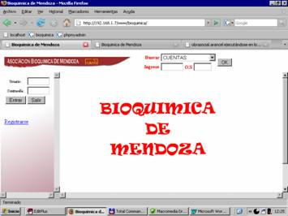
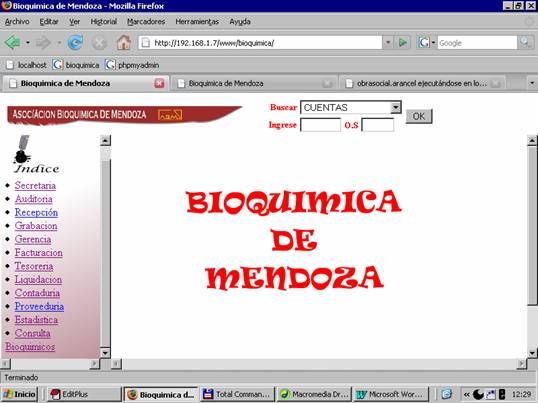
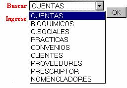
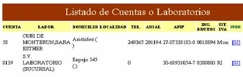
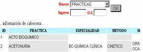
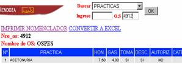
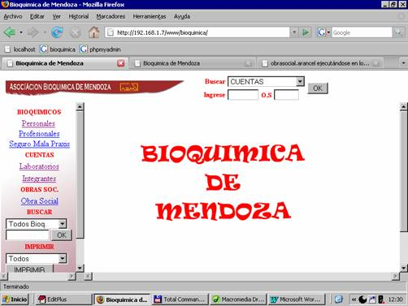
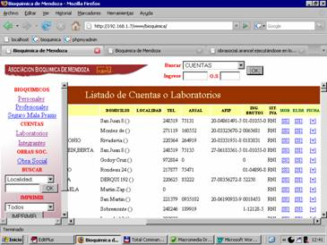

1. ENTRAR AL SISTEMA
Ingrese Nombre de Usuario y contraseña
Ej. Recepción
123
Una vez adentro nos ubicamos en el menú principal (INDICE) según el Usuario será los ítem que contenga cada Índice. Ejemplo: Usuario: admin (Administrador de Sistema) se Visualizará el siguiente INDICE

BUSCADORES
En la parte superior de la pagina encontramos un buscador inteligente:

En este Buscador seleccionamos la opción
que necesitemos.
Ejemplo:
Cuentas:
Ingrese: Cur
Apriete OK
Nos devuelve lo siguiente:

En el caso de Practicas: Tenemos varias formas de Buscar.

Sino Ingresamos Código de Practica ni Obra Social: Nos devuelve el listado de practicas con sus respectivas características...

Ingresando código de Obra Social: Nos devuelve el nomenclador actual, con sus respectivos valores sujetos a los convenios.Además tenemos la opción de Imprimirlo o Convertirlo a Excel.
SECRETARIA

En el índice de Secretaria encontramos Alta de Bioquímicos, comprende todos los datos relacionados a un bioquímico este o no asociado a la entidad, estos incluyen además los datos profesionales y el seguro de Mala Praxis.
En el sector de Cuentas: Se realizarán Altas de las cuentas activándose en la asociación.
En el link Integrantes se darán de alta todos aquellos bioquímicos que abran una cuenta en sociedad, es importante estos datos porque serán tenidos en cuenta a la hora de retención de impositiva.
En el sector de Obra Social: Se realizarán Altas de las obra sociales. (Convenio aparte – Ver Convenio).
Buscadores por: (según necesidad de informar) En el menú desplegable se selecciona el tipo de búsqueda y en la caja de texto vacía se ingresa el código de bioquímico o código de cuenta según el caso lo requiera. Todos estos son visualizados por pantalla
En el menú desplegable siguiente encontramos planillas para imprimir. Seleccionamos tipo de planilla y luego apretamos el botón de IMPRIMIR
Para eliminar, modificar o ver alguna cuenta, bioquímico u obra social. Seleccionamos en el buscador el código y/o nombre a buscar y nos aparecerá la siguiente respuesta.

Seleccionamos según la necesidadModificar
Eliminar
Ficha: Nos devuelve una ficha con los datos requeridos